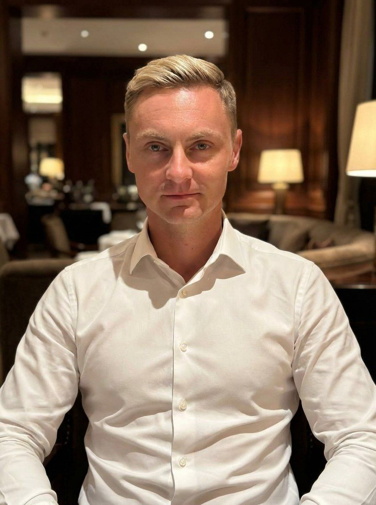
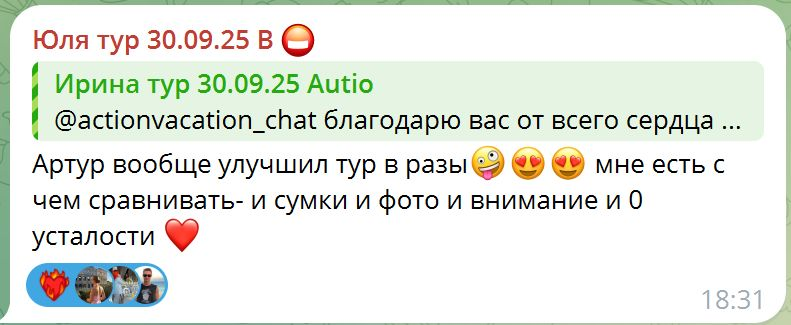
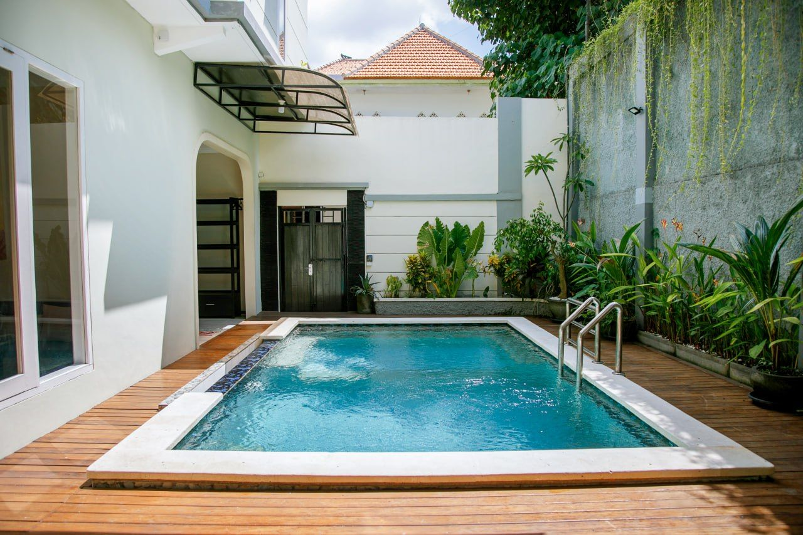
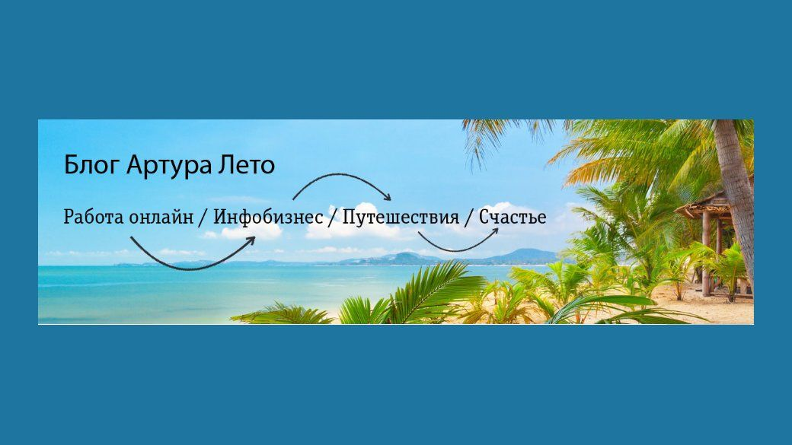

Артур Лето
Я строю операционную систему, которая предотвращает хаос: процессы, люди, качество, метрики. Умею автоматизировать рутину и удерживать выполнение обещаний перед клиентом. Я - правая рука основателя.
Почему это моя роль
- моя суперсила - исполнение, контроль, сервис, процессы, дисциплина
- Мне комфортно в среде ответственности, стандартов, контроля качества
- умею работать “руками”, но думаю системно
- умею говорить с собственником на языке “проблема → риск → решение → метрика”
- привык быть правой рукой основателя ( CoS/Head of Ops )
Опыт
Каждый пункт открывается подробным разбором с фото и цифрами.







Цифры и достижения
PARSLEAD (B2B Telegram leadgen SaaS, подписка) / Founder
- Первый клиент: 1 мая 2023 PARSLEAD
- Активная база клиентов: стабильно 8-14, в среднем ~10
- Рекорд: 20 платящих клиентов одновременно
- Модель оплаты: $50 / клиент / месяц
Pelmeni Bali (D2C food-project, производство + доставка) / Founder
- 95 заказов
- 64 уникальных клиента
- 119 кг продано
- За 3 месяца вывел проект в плюс и перекрыл стартовые вложения
Инфобизнес / партнёрский маркетинг (2015-2020) / Founder
- Проведены запуски 4-х курсов
- 10 000 email-подписчиков суммарно
- Написано 1000+ писем
- Пик чистого дохода: 500 000 ₽/мес
OXIO Bikes (прокат мотобайков, Бали) / Operations Director
- Операционный директор оффлайн бизнеса 2 года 2 месяца: 01.12.2022 → 03.02.2025
- Актив-парк (куплены/управлялись): 4 байка (PCX, XMAX, XSR, Benelli TNT)
Ищу
- стартап/школу/комьюнити/маркетплейс/платформу/SaaS
- где боль: хаос, retention, customer success, масштабирование, команда
Идеальный формат работы
Я максимально полезен там, где есть рост, ответственность и необходимость навести порядок в операционке.
Мне подходят среды, где нужно:
- быстро разобраться в системе,
- убрать хаос,
- распределить роли и ответственность,
- поставить метрики и контроль,
- стабилизировать качество,
- и масштабировать то, что уже работает.
Сценарии, в которых я даю максимальную пользу
1) Стартап / продукт в росте (post-MVP)
Продукт уже продаётся, есть прибыль и спрос, команда растёт - и вместе с ростом появляется хаос: проблемы в исполнении, провалы в качестве, собственник тонет в операционке.
Моя роль: собрать систему так, чтобы рост стал управляемым: процессы, люди, контроль качества, метрики, отчётность, регламенты.
2) Правая рука собственника / инвестора (операционный партнёр)
Есть владелец или инвестор, который умеет видеть возможности и развивать бизнес, но ему нужен человек, который вытянет ежедневную операционку и превратит идеи в работающую систему.
Моя роль: взять на себя исполнение и управление: команда, процессы, дисциплина, сервис, сроки, качество.
3) Проект/компания с большим количеством исполнителей (комьюнити / платформа / сеть)
Когда в системе много людей (кураторы, специалисты, партнёры, подрядчики) и качество держится только на ручном контроле и “героизме”.
Моя роль: стандарты, правила, контрольные точки, поддержка, метрики удержания и качества - чтобы система работала стабильно и без пожаров.
Какой формат мне подходит дополнительно
✅ Зрелая компания, где нужно заменить операционного руководителя и взять управление уже работающей системой - если есть доверие и реальные полномочия.